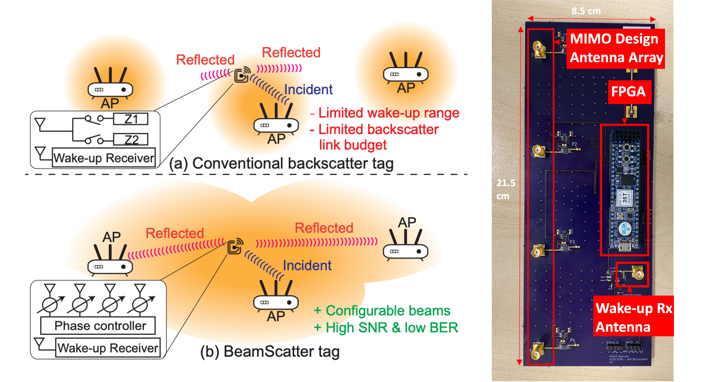

About Me
Currently pursuing my Masters of Science in Electrical Engineering at CalTech, expanding my skills and experience from my Bachelors of Science degree that I earned at UCSD. My interests include Integrated Circuit Design and Wireless Systems which I have utilized in working on projects pertaining to Wi-Fi Backscatter, Sensors Ciruits and Wireless Sensing Systems. Excited to continue building systems for all kinds of applications.
Experience
- Developed a novel system for signal agnostic Angle of Arrival (AoA) estimation for RF signals in the sub 6 GHz spectrum.
- Performed Ansys HFSS and MATLAB simulations for designing antenna arrays for wideband performance.
- Integrated and synchronized hardware like SDRs and control boards with host software for signal detection and AoA estimation.
Research
Wi-Fi backscatter tags can enable direct connectivity of IoT devices with commodity Wi-Fi hardware at low power. However, current tags pose issues such as having limited range, not being suitable for Wi-Fi mesh networks and not taking advantage of network capabilities such as MIMO. Our work BeamScatter adresses all these challenges by developing a MIMO based backscatter tag with beam-stearing capabilities. Both discrete and integrated solutions were developed for the same.

Key Contributions
- Optimized power and area for layout of hardware blocks like antenna arrays and sensing circuitry on a custom PCB.
- Utilized Verilog coding to implement multiple functional blocks like clocking, UART and controls on CMOD FPGAs.
- Automated data collection process using python scripts for validation and debugging, leading to a faster validation process.
Publications
- S.-K. Kuo, M. Dunna, H. Lu, A. Agarwal, D. Bharadia, P.P. Mercier, "An LTE-harvesting BLE-to-WiFi Backscattering Chip for Single-Device RFID-like Interrogation" IEEE International Solid-State Circuits Conference 2023
- M. Dunna, S.-K. Kuo, A. Agarwal, P.P. Mercier, D. Bharadia, "BeamScatter: Scalable, Deployable Long-Range Backscatter Communication with Beam-Steering" Cornell University arXiv
Wearable Electronics have tracted massive interest due to their applications in fields of biomedical and computational sciences. This project investigated the use of Bio-Fuel Cells (BFCs) as power sources for wearable electronics systems for health monitoring and sensing applications.
Key Contributions
- Designed a minimally sized PCB integrating a COTS Boost Convertor and Bluetooth Module along with required interfacing components.
- Minimized power requirement from BFC by transmitting sensor data through bluetooth advertisement packets instead of using standard bluetooth connection.
- Utilized TI BLE5 software stack for Bluetooth advertising.
Projects
- Designed a two-stage (folded cascode with common source), differential-to-single-ended amplifier with built-in biasing circuitry using TSMC 180nm technology.
- Simulated the design in Cadence Virtuoso and achieved gain of 73dB, unity gain bandwidth of 31 Mhz and power consumption of 2.19mW.
- Designed a custom architecture 8-bit, variable-length carry increment adder using GPDK045 45nm technology.
- Simulated the design in Cadence Virtuoso and achieved a maximum operational frequency of 4 GHz and power consumption of 600uW.
- Led a team of engineering students for an IEEE project to develop a Google Home based IoT device.
- Programmed ESP32 modules to use chromotherapy principles and audio commands given by a user to dynamically adjust lighting conditions in a room to elevate user mood.
- Improved efficiency and accuracy for detection on moving objects in a video to detect baboon movements in video clips for understanding movement patterns.
- Used python image processing concepts and packages like opencv to implement detection of objects.